Cellular Potts Model
Cell-sorting simulations on a 2D lattice.
Overview
The Cellular Potts Model (CPM) is a lattice-based model for simulating the dynamics of interacting cells. Originally developed to study cell sorting, the model assigns each site on an $N \times N$ grid to a cell type and evolves the system through a sequence of Monte Carlo steps in which proposed site updates are accepted or rejected according to a Boltzmann probability dependent on the change in energy. The energy of the system is governed by a Hamiltonian encoding two competing effects: differential adhesion, which drives cells of the same type to cluster together, and a volume constraint, which penalises deviations from a target volume. This project investigates the qualitative cell-sorting behaviour produced by the CPM and examines how varying the parameters of the Hamiltonian affects pattern formation.
The Hamiltonian
The Hamiltonian $H$ encodes the physical laws governing cell behaviour, with each term representing a distinct biological constraint:
$$ H = \sum_{\text{neighbours}} J\!\left(\sigma_{(i,j)}, \sigma_{(i',j')}\right) \left(1-\delta_{\sigma_{(i,j)},\sigma_{(i',j')}}\right) + \lambda_v \sum_{\sigma=1}^{n} \left( v(\sigma) - V_T(\sigma) \right)^2. $$The first term encodes differential adhesion: cells incur an energy cost $J(\sigma, \sigma')$ when sharing a boundary with a cell of a different type, but no cost when adjacent to their own type. The symmetric matrix $J$ determines how strongly each pair of cell types repels; by varying its entries we can drive qualitatively different sorting configurations.
The second term enforces a volume constraint, penalising any cell type whose total site count $v(\sigma)$ deviates from its target volume $V_T(\sigma)$. The parameter $\lambda_v$ controls the rigidity of this constraint.
Method
The simulation takes place on an $N \times N$ square lattice. Each grid point is assigned a value from $\{0, \ldots, n\}$, where $0$ represents the background medium and $1, \ldots, n$ denote cell types. The lattice is initialised with a circular region at its centre containing a random mixture of cell types, surrounded by background. Periodic boundary conditions are used throughout.
Time is measured in Monte Carlo Steps (MCS). During each MCS, $N^2$ attempted updates are performed. Each update proceeds as follows: a lattice site $(i, j)$ is selected at random, then a random neighbour from its Moore 8-neighbourhood is selected. If the two sites have different cell types, the proposed change (copying the neighbour's type to $(i, j)$) is accepted with probability $$\min\!\left(1,\, e^{-\Delta H / T}\right),$$ where $\Delta H$ is the resulting change in the Hamiltonian and $T$ is the Boltzmann temperature, which controls the level of noise in the system.
Results
Basic cell sorting
We first consider the simplest case: two cell types with equal contact energies, using $\lambda_v = T = 1$, $N = 150$, $V_T = (0, 2500, 2500)$, and symmetric adhesion matrix $$J = \begin{pmatrix} 0 & 1 & 1 \\ 1 & 0 & 1 \\ 1 & 1 & 0 \end{pmatrix}.$$ The lattice is shown at $t = 0, 10, 100, 500, 2300$ MCS.
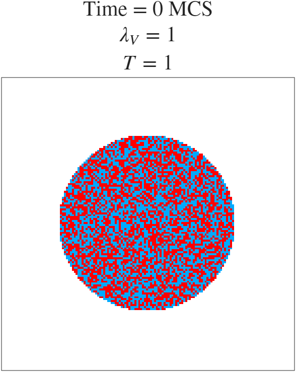
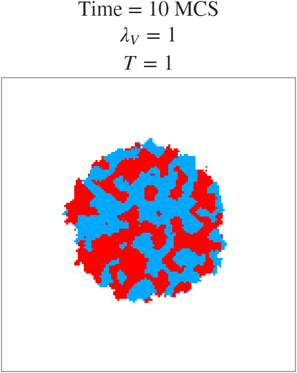
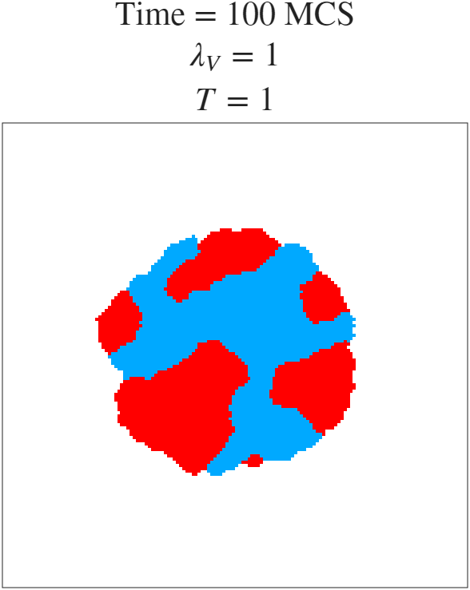
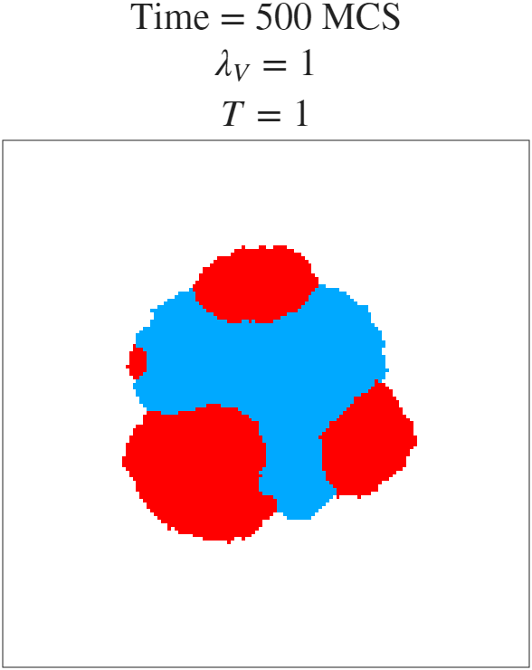
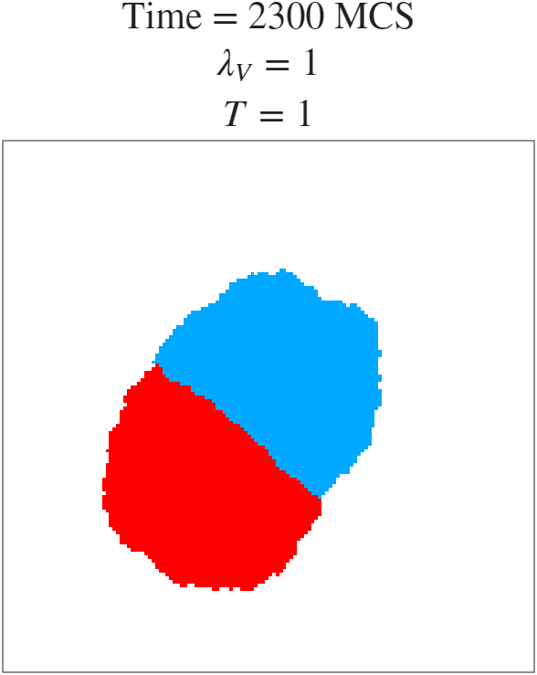
Effect of $\lambda_v$
Increasing $\lambda_v$ to 10 raises the energy penalty for every cell flip, making the system far more reluctant to change. The snapshots below ($t = 0, 10, 100, 300$ MCS) show that sorting still occurs but progresses much more slowly, with little visible evolution between MCS 100 and MCS 300.
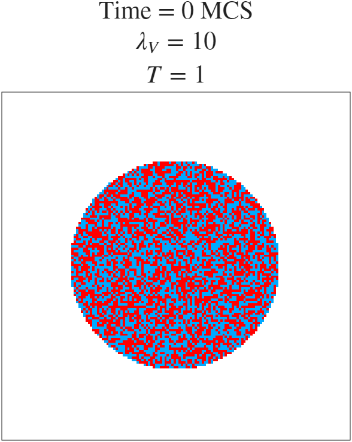
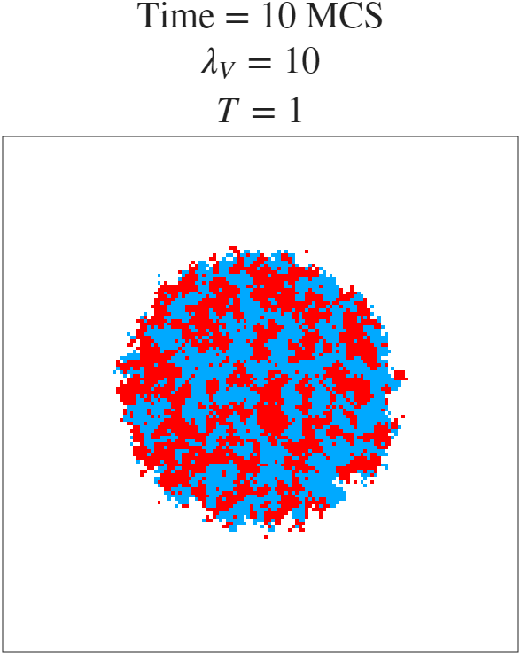
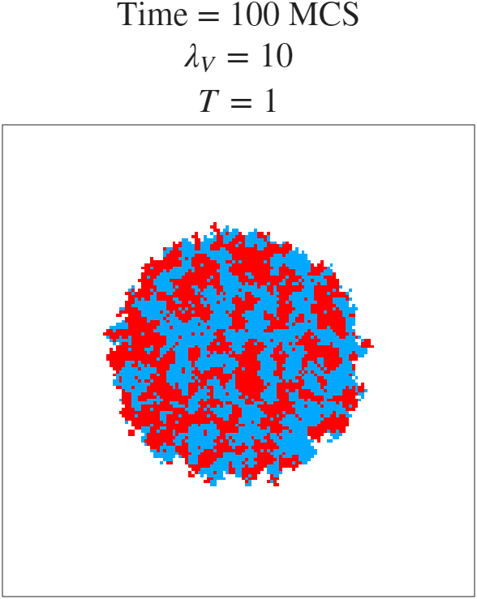
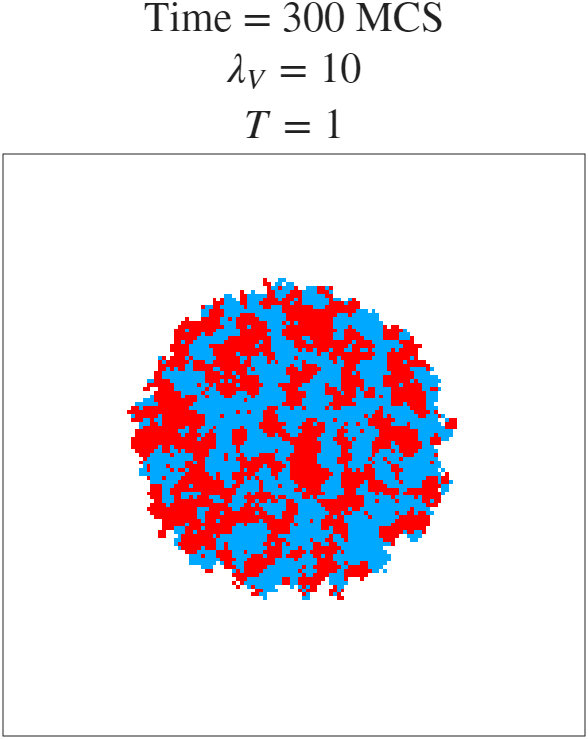
Effect of temperature $T$
The Boltzmann temperature $T$ controls the amount of random fluctuation in the system. A large $T$ increases the probability of energetically unfavourable moves being accepted. With $T = 10$ the simulation produces noisy, feathered cell boundaries rather than the smooth separated regions seen previously ($t = 0, 10, 100, 250$ MCS).
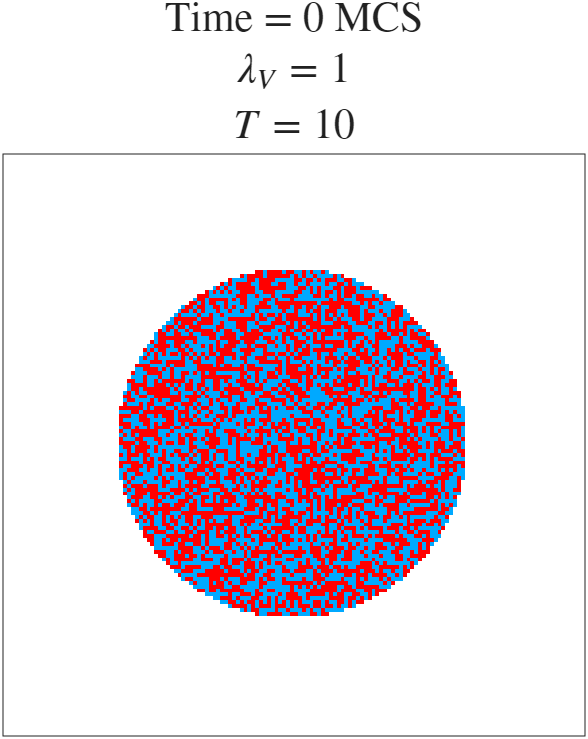
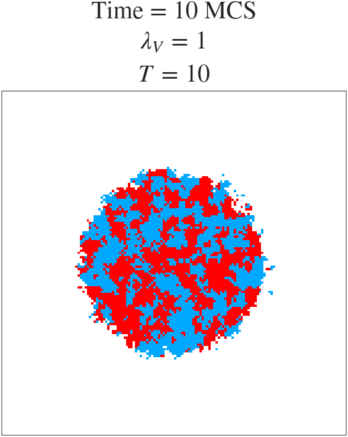
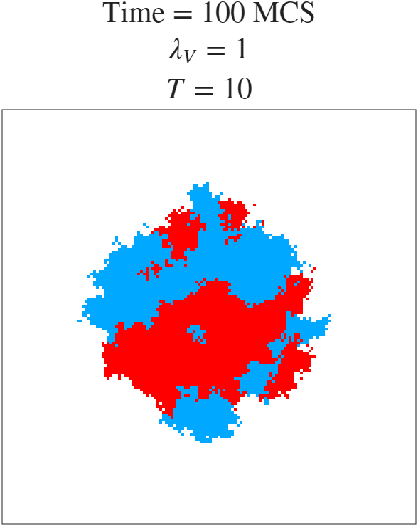
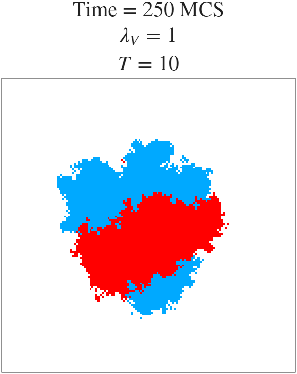
Preferential adhesion
By making the adhesion matrix asymmetric we can drive more structured sorting. Setting $$J = \begin{pmatrix} 0 & 1 & 10 \\ 1 & 0 & 1 \\ 10 & 1 & 0 \end{pmatrix}$$ means cell type 2 incurs a large energy penalty when in contact with the background, and so is strongly driven to be surrounded by cell type 1. By MCS 100 the type-1 cells have completely enveloped the type-2 cells, and by MCS 950 the configuration is fully sorted ($t = 0, 10, 100, 950$ MCS).
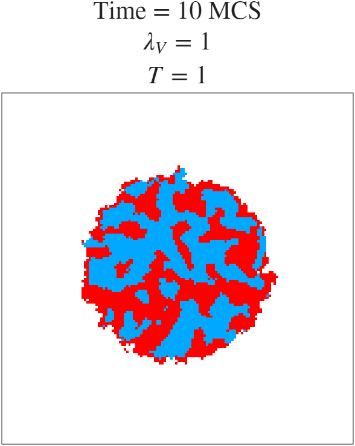
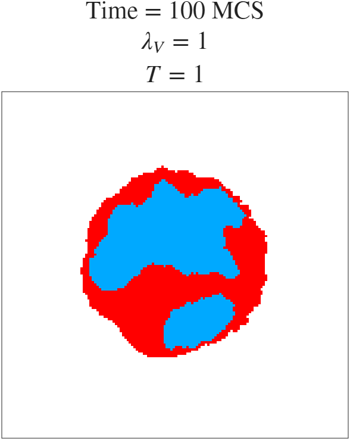
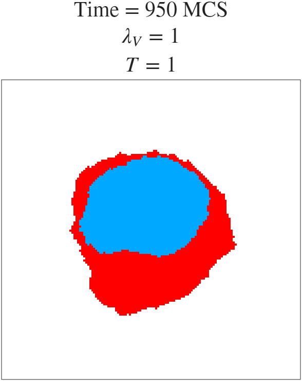
Three cell types
Extending to $n = 3$ cell types with a $4 \times 4$ adhesion matrix $$J = \begin{pmatrix} 0 & 1 & 10 & 10 \\ 1 & 0 & 1 & 5 \\ 10 & 1 & 0 & 1 \\ 10 & 5 & 1 & 0 \end{pmatrix}$$ and target volumes $V_T = (0, 2500, 2500, 2500)$ produces nested sorting. The entries ensure that type-3 cells have the lowest contact energy with type-2, and type-2 with type-1, so the system evolves into a layered configuration. By MCS 650 the three types are fully nested ($t = 0, 10, 100, 650$ MCS).
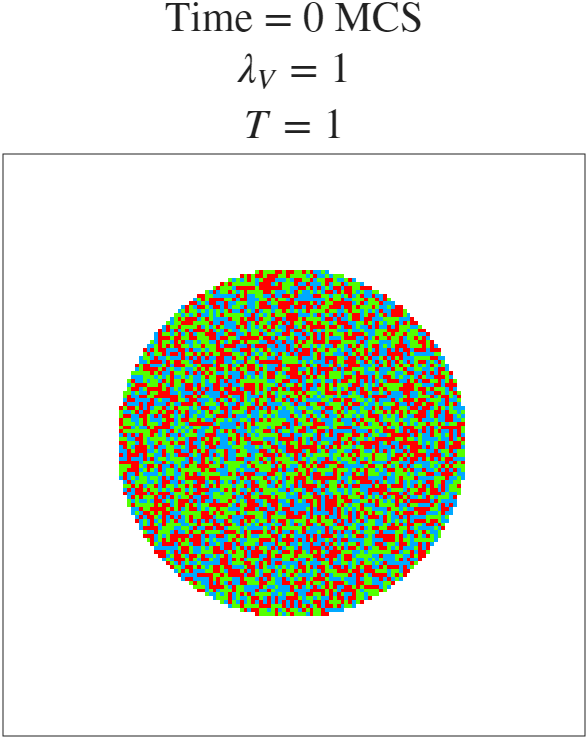
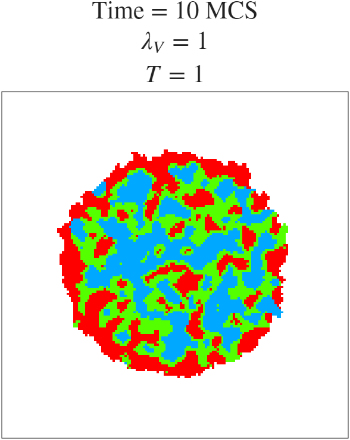
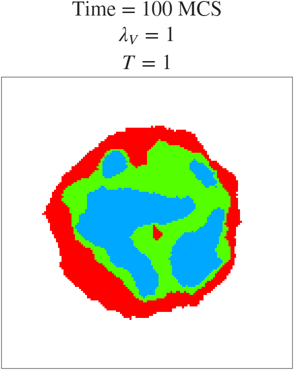
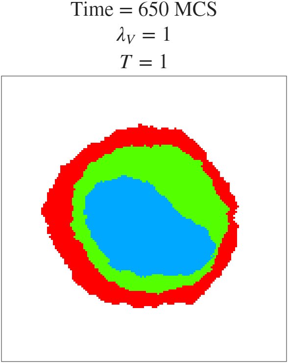
Implementation
The simulation is implemented in MATLAB. The two-cell case uses CPM.m and the
three-cell case uses CPM_3cell.m; both are available on the linked GitHub. Below
is the core update logic: deltaH computes the change in Hamiltonian from a
proposed copy attempt, and updateCells applies the Metropolis–Hastings
acceptance step.
function dH = deltaH(r, c, new_type)
oldType = lattice(r, c);
if oldType == new_type, dH = 0; return; end
dH_adhesion = 0;
for i = 1:size(NEIGHBORS, 1)
new_r = mod(r + NEIGHBORS(i,1) - 1, gridWidth) + 1;
new_c = mod(c + NEIGHBORS(i,2) - 1, gridWidth) + 1;
nType = lattice(new_r, new_c);
contact_before = J(oldType+1, nType+1) * (1 - (oldType == nType));
contact_after = J(new_type+1, nType+1) * (1 - (new_type == nType));
dH_adhesion = dH_adhesion + (contact_after - contact_before);
end
dH_volume = 0;
if oldType ~= 0
vO = volumes(oldType+1); VO = targetVolume(oldType+1);
dH_volume = dH_volume + lambdaV * ((vO-1-VO)^2 - (vO-VO)^2);
end
if new_type ~= 0
vN = volumes(new_type+1); VN = targetVolume(new_type+1);
dH_volume = dH_volume + lambdaV * ((vN+1-VN)^2 - (vN-VN)^2);
end
dH = dH_adhesion + dH_volume;
end
function updateCells()
r = randi(gridWidth);
c = randi(gridWidth);
nbr = getRandomNeighbor(r, c);
oldType = lattice(r, c);
newType = lattice(nbr(1), nbr(2));
if oldType == newType, return; end
dH = deltaH(r, c, newType);
if rand < exp(-dH / T)
lattice(r, c) = newType;
volumes(oldType+1) = volumes(oldType+1) - 1;
volumes(newType+1) = volumes(newType+1) + 1;
end
endReferences
Graner, F. & Glazier, J. A. (1992). Simulation of biological cell sorting using a two-dimensional extended Potts model. Physical Review Letters, 69(13), 2013–2016. doi:10.1103/PhysRevLett.69.2013